02-redis数据类型篇
redis数据类型官网资料，https://redis.io/docs/manual/data-types/
生产环境下的redis实况图
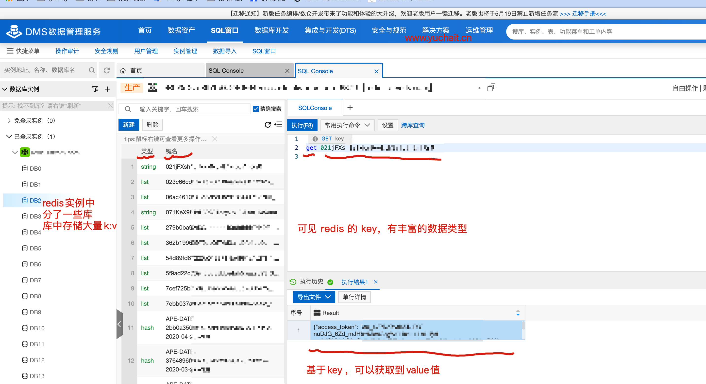
超哥这个redis实例里，db0库有140万个key。
1.全局命令
redis数据存储格式
key : value
键 : 值
set设置k-v
[root@db-51 ~]#redis-cli
127.0.0.1:6379> set name 于超老师带你学linux
OK
127.0.0.1:6379>
127.0.0.1:6379> set k1 v1
OK
127.0.0.1:6379> set k2 v2
OK
127.0.0.1:6379>
127.0.0.1:6379> set my-website www.yuchaoit.cn
OK
127.0.0.1:6379> keys *
1) "my-website"
2) "k2"
3) "k1"
4) "name"
127.0.0.1:6379> dbsize
(integer) 4
当前库下有4个key
危险命令，新手请在于超老师陪同下执行
线上，生产环境服务器，严禁随意执行该命令
keys *
来看看一堆运维的聊天记录
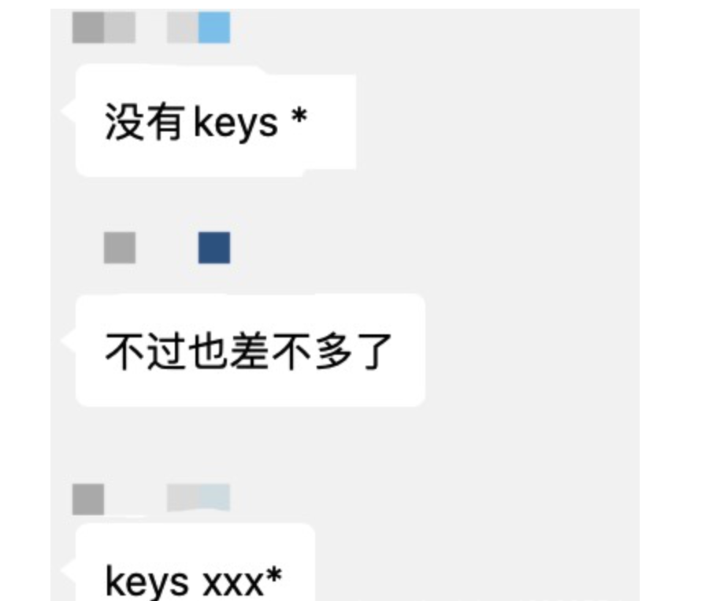
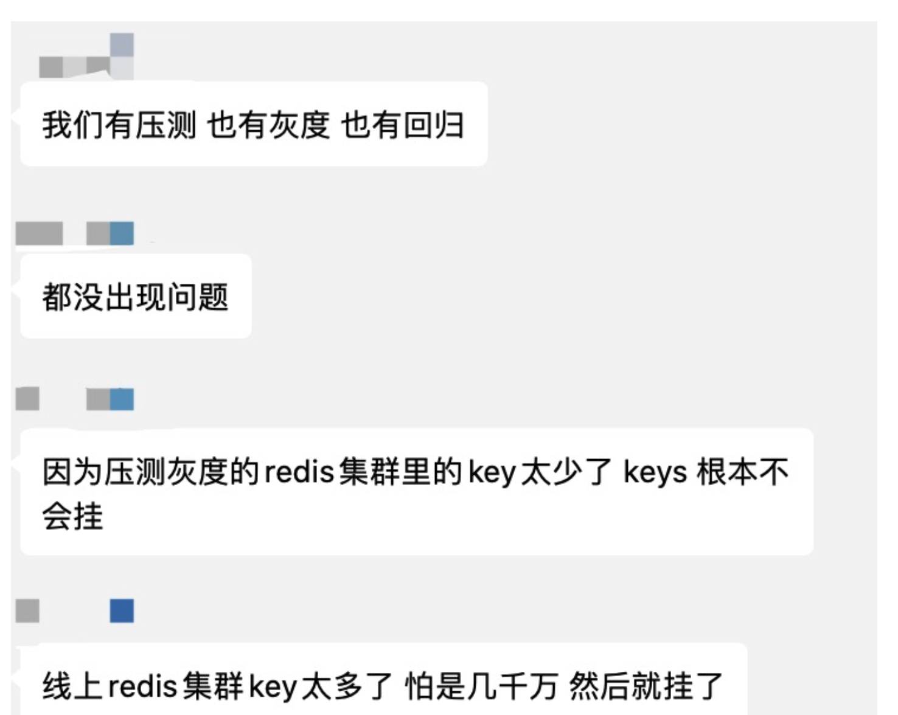
为什么危险？
如果是非线上redis环境，你执行也还凑活
但是为什么生产redis服务器，禁止呢？
看官方解释，keys *的意思
Available since 1.0.0.
Time complexity: O(N) with N being the number of keys in the database, under the assumption that the key names in the database and the given pattern have limited length.
Returns all keys matching pattern.
While the time complexity for this operation is O(N), the constant times are fairly low. For example, Redis running on an entry level laptop can scan a 1 million key database in 40 milliseconds.
Warning: consider KEYS as a command that should only be used in production environments with extreme care. It may ruin performance when it is executed against large databases. This command is intended for debugging and special operations, such as changing your keyspace layout. Don’t use KEYS in your regular application code. If you’re looking for a way to find keys in a subset of your keyspace, consider using SCAN or sets.
大致意思就是
keys 命令是扫描redis所有的key，且速度非常快，大约是40ms 100万个key。
在生产环境下，应该极少的情况下，再去用keys命令，否则会导致如超过千万key数量的实例出现灾难性宕机的问题。
如何正确搜索redis的key
先看错误玩法，一个萌新运维，作死执行的命令。
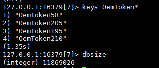
可见，该7号库下，有1200W个key
基于keys OemToken*这样的模糊搜索，执行了1.35秒，大约100ms扫描100万个key，这个速度是远慢于官方的搜索指标的。
这是因为该服务器不能只跑redis啊，其他的进程都在抢夺CPU，因此redis这里就慢了么。
根本原因在于
1. redis是k-v类型的数据库，以hash结构存储，因此可以根据key，超高速的查询value值。
2. 但是基于* 这样的模糊key搜索，redis只能进行全库扫描，并且redis是单线程执行命令，同一时间只能有一个命令在运行，如果你这里keys * 卡了半天，导致其他redis的key读写命令全部等待，数据库就废了。
如何改进
基于scan命令替代keys命令
查看库下有多少个key
127.0.0.1:6379> dbsize
(integer) 4
查询redis库信息
redis没有类似于select database();这样的查询方式
且redis的数据库数量一般默认是16个，在配置文件中定义。
127.0.0.1:6379> config get databases
1) "databases"
2) "16"
#列出库与key的信息
# Keyspace
db0:keys=1405362,expires=7,avg_ttl=1748492
db1:keys=3839,expires=3835,avg_ttl=39910630
# 或者用如下命令
[root@db-51 ~]#redis-cli info |grep ^db
db0:keys=4,expires=0,avg_ttl=0
切换redis库
语法
127.0.0.1:6379> SELECT index
默认是16个，0~15号库
127.0.0.1:6379> select 0
OK
127.0.0.1:6379> dbsize
(integer) 4
127.0.0.1:6379> select 17
(error) ERR DB index is out of range
127.0.0.1:6379> select 16
(error) ERR DB index is out of range
127.0.0.1:6379> select 15
OK
127.0.0.1:6379[15]>
127.0.0.1:6379[15]> dbsize
(integer) 0
127.0.0.1:6379[15]>
查看key是否存在
127.0.0.1:6379> EXISTS key [key ...]
语法
exists key_name
127.0.0.1:6379> EXISTS name
(integer) 1
127.0.0.1:6379> EXISTS name1
(integer) 0
0 没这key
1 有这key
支持查找多个
返回的值表示找到了几个
127.0.0.1:6379> EXISTS k1 k2 name 1 2 3 4
(integer) 3
删除key
[root@db-51 ~]#redis-cli
127.0.0.1:6379> DEL key [key ...]
del key_name
删除多个key
del k1 k2 k3
删除了2个key
127.0.0.1:6379> del k1 k2
(integer) 2
一个都没找到
127.0.0.1:6379> del k1 k2
(integer) 0
key过期设置
EXPIRE key_name 过期秒
127.0.0.1:6379> EXPIRE key seconds
127.0.0.1:6379> EXPIRE my-website 10
(integer) 1
127.0.0.1:6379> get my-website
"www.yuchaoit.cn"
127.0.0.1:6379> get my-website
"www.yuchaoit.cn"
127.0.0.1:6379> get my-website
"www.yuchaoit.cn"
127.0.0.1:6379> get my-website
(nil)
10秒之后，key消失
查看过期时间
设置一个key，默认没过期时间
127.0.0.1:6379> set name yuchao [expiration EX seconds|PX milliseconds] [NX|XX]
查看过期时间
127.0.0.1:6379> TTL name
(integer) -1
-1 表示key存在，永不过期
-2 表示key不存在
N 表示key还剩下N秒
127.0.0.1:6379> EXPIRE name 20
(integer) 1
127.0.0.1:6379> TTL name
(integer) 15
127.0.0.1:6379> TTL name
(integer) 11
key过期是非常实用，用的非常多的场景，你想想，你用的各类APP，有哪些地方遇见限时倒计时的，都是这个特性。
如限时给你发24小时的优惠券，到期自动删除。
取消过期时间
1. 重新set设置即可
set mywebsite www.yuchaoit.cn
2. 方法2
127.0.0.1:6379> PERSIST key
3实践
set mywebsite www.yuchaoit.cn
127.0.0.1:6379> EXPIRE mywebsite 60
(integer) 1
127.0.0.1:6379>
127.0.0.1:6379> TTL mywebsite
(integer) 56
127.0.0.1:6379>
127.0.0.1:6379> PERSIST mywebsite
(integer) 1
127.0.0.1:6379> TTL mywebsite
(integer) -1
127.0.0.1:6379>
2.字符串类型
首先对redis来说，所有的key（键）都是字符串。
我们在谈基础数据结构时，讨论的是存储值的数据类型
主要包括常见的5种数据类型，分别是：String、List、Set、Zset、Hash。
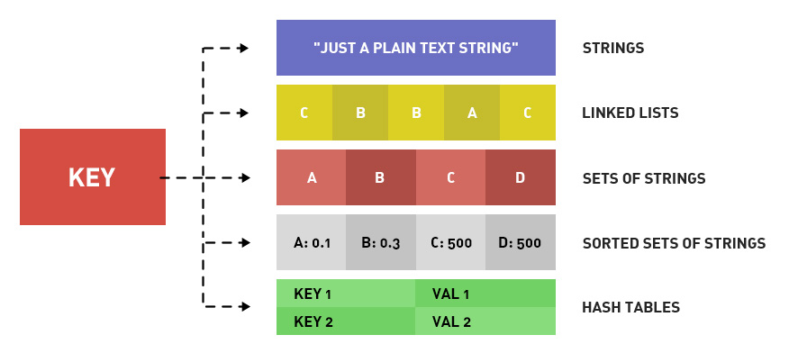
| 结构类型 | 结构存储的值 | 结构的读写能力 |
|---|---|---|
| String字符串 | 可以是字符串、整数或浮点数 | 对整个字符串或字符串的一部分进行操作；对整数或浮点数进行自增或自减操作； |
| List列表 | 一个链表，链表上的每个节点都包含一个字符串 | 对链表的两端进行push和pop操作，读取单个或多个元素；根据值查找或删除元素； |
| Set集合 | 包含字符串的无序集合 | 字符串的集合，包含基础的方法有看是否存在添加、获取、删除；还包含计算交集、并集、差集等 |
| Hash散列 | 包含键值对的无序散列表 | 包含方法有添加、获取、删除单个元素 |
| Zset有序集合 | 和散列一样，用于存储键值对 | 字符串成员与浮点数分数之间的有序映射；元素的排列顺序由分数的大小决定；包含方法有添加、获取、删除单个元素以及根据分值范围或成员来获取元素 |
内容其实比较简单，我觉得理解的重点在于这个结构怎么用，能够用来做什么？
所以我在梳理时，围绕图例，命令，执行和场景来阐述。
String字符串
String是redis中最基本的数据类型，一个key对应一个value。
- 图例
下图是一个String类型的实例，其中键为hello，值为world
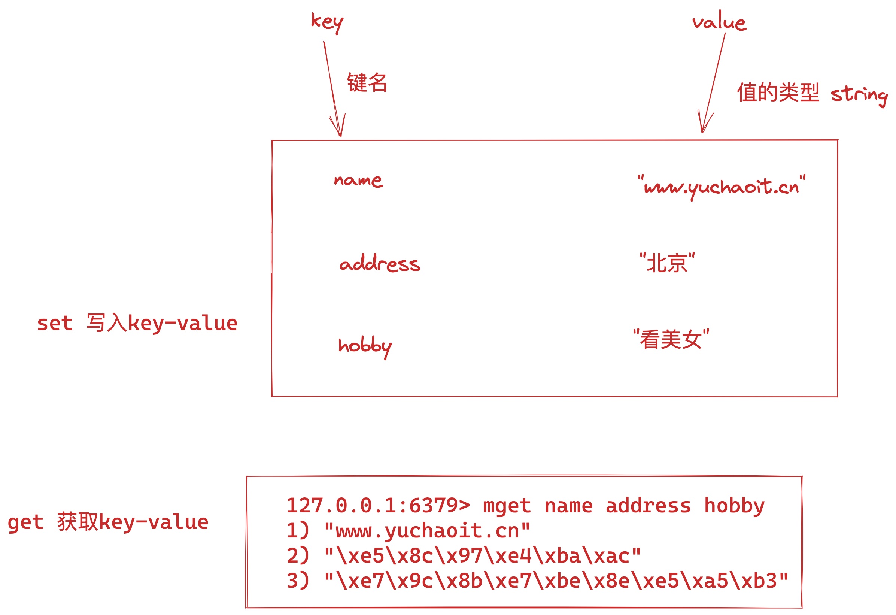
如果查看内容中包含中文，会显示16进制的字符串”\xe4\xb8\xad\xe5\x9b\xbd”
可以用如下方法查询中文的值
[root@db-51 ~]#redis-cli --raw mget name address hobby
www.yuchaoit.cn
北京
看美女
字符串相关的命令
- 命令使用
| 命令 | 简述 | 使用 |
|---|---|---|
| GET | 获取存储在给定键中的值 | GET name |
| SET | 设置存储在给定键中的值 | SET name value |
| DEL | 删除存储在给定键中的值 | DEL name |
| INCR | 将键存储的值加1 | INCR key |
| DECR | 将键存储的值减1 | DECR key |
| INCRBY | 将键存储的值加上整数 | INCRBY key amount |
| DECRBY | 将键存储的值减去整数 | DECRBY key amount |
string实践
# 设置一个key，不过期
[root@db-51 ~]#redis-cli
127.0.0.1:6379> set myweb www.yuchaoit.cn
127.0.0.1:6379> set hello world
OK
127.0.0.1:6379> get hello
"world"
# 设置key，60s过期
127.0.0.1:6379> set myweb www.yuchaoit.cn ex 60
OK
127.0.0.1:6379> TTL myweb
(integer) 57
# 查看一个key值
127.0.0.1:6379> get myweb
"www.yuchaoit.cn"
# 一次性设置多个key，mset命令
127.0.0.1:6379> mset k1 v1 k2 v2 k3 v3
OK
# 查看多个key的值
127.0.0.1:6379> mget k1 k2 k3
1) "v1"
2) "v2"
3) "v3"
# 天然计数器
# 从0开始，每次+1，如点赞、评论，阅读量，都可以用该功能
127.0.0.1:6379> set counter 0
OK
127.0.0.1:6379> get counter
"0"
# incr指令实现值+1
127.0.0.1:6379> set counter 0
OK
127.0.0.1:6379> get counter
"0"
127.0.0.1:6379> INCR counter
(integer) 1
127.0.0.1:6379> INCR counter
(integer) 2
127.0.0.1:6379> INCR counter
(integer) 3
127.0.0.1:6379> INCR counter
(integer) 4
127.0.0.1:6379> get counter
"4"
# decr 指令实现值-1
127.0.0.1:6379> DECR counter
(integer) 3
127.0.0.1:6379> DECR counter
(integer) 2
127.0.0.1:6379> get counter
"2"
# 值增加 指定数字
# 计数器刷到2002
127.0.0.1:6379> INCRBY key increment
127.0.0.1:6379> INCRBY counter 2000
(integer) 2002
127.0.0.1:6379> get counter
"2002"
# 减去指定的数字
# 计数器要减去500
127.0.0.1:6379> DECRBY counter 500
(integer) 1502
127.0.0.1:6379> get counter
"1502"
String企业级使用场景
1. 数据缓存
经典用法，把经常要读取的如mysql里的url、字符串、音视频等字符串信息，存储到redis里。
redis作为缓存层，加速数据读取，mysql作为数据持久化层，降低mysql的访问压力。
提示：音视频等信息存储在mysql里，一般存储的是如url，或者路径，便于查找访问。
而非直接存储二进制数据，并不合适。
2.计数器
redis是单线程模式，一个命令结束才会执行下一个命令，因此可以实现计数器的作用，确保多进程访问redis的数据，也能确保数据源正确性。
（使用场景，如微博的博文阅读量，你可以理解为你可以直接修改key的值，修改阅读量为99999）
3.用作网站用户的登录会话存储
存储session，或者token等信息
3.列表List
Redis中的List其实就是链表（Redis用双端链表实现List）。
使用List结构，我们可以轻松地实现最新消息排队功能（比如新浪微博的TimeLine）。
网上有教程，说是如访问
https://weibo.com/?is_search=1
添加该参数，可以访问最新微博消息，而非系统给你推荐的，如几天之前的新闻。
该功能代码实现，就是基于如redis的list数据类型，实现的新博文排队，可以获取最新的博文数据。
List的另一个应用就是消息队列，可以利用List的 PUSH 操作，将任务存放在List中，然后工作线程再用 POP 操作将任务取出进行执行。
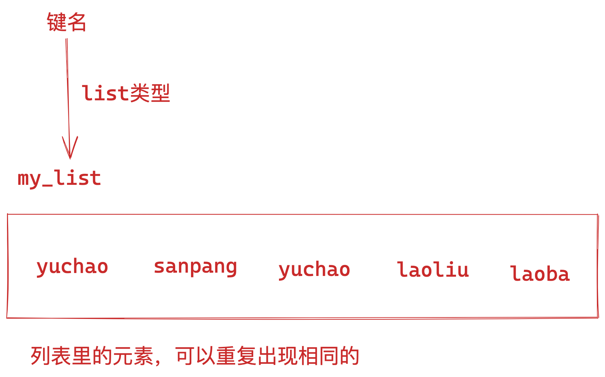
列表命令
| 命令 | 简述 | 使用 |
|---|---|---|
| RPUSH | 将给定值推入到列表右端 | RPUSH key value |
| LPUSH | 将给定值推入到列表左端 | LPUSH key value |
| RPOP | 从列表的右端弹出一个值，并返回被弹出的值 | RPOP key |
| LPOP | 从列表的左端弹出一个值，并返回被弹出的值 | LPOP key |
| LRANGE | 获取列表在给定范围上的所有值 | LRANGE key 0 -1 |
| LINDEX | 通过索引获取列表中的元素。你也可以使用负数下标，以 -1 表示列表的最后一个元素， -2 表示列表的倒数第二个元素，以此类推。 | LINDEX key index |
- 使用列表的技巧
- lpush+lpop=Stack(栈)
- lpush+rpop=Queue（队列）
- lpush+ltrim=Capped Collection（有限集合）
- lpush+brpop=Message Queue（消息队列）
list实践
lpush左边压入数据
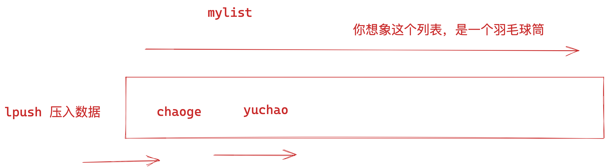
# 从左边压入数据
127.0.0.1:6379> lpush mylist2 yuchao
(integer) 1
127.0.0.1:6379> lpush mylist2 chaoge
(integer) 2
# 查询列表数据
127.0.0.1:6379> lrange mylist2 0 -1
1) "chaoge"
2) "yuchao"
rpush右边压入数据
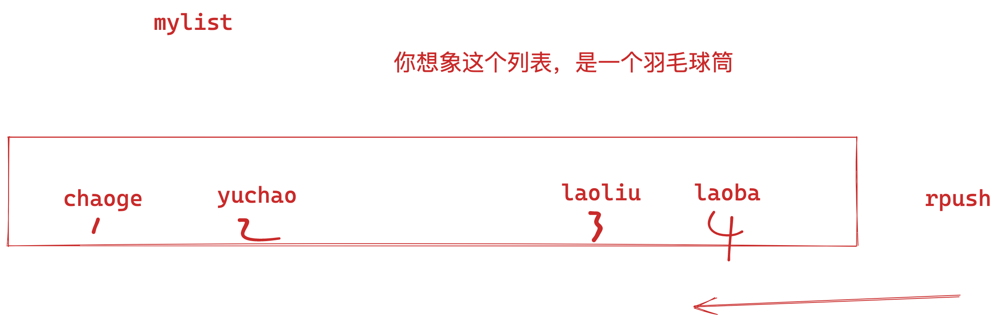
127.0.0.1:6379> rpush mylist2 laoliu
(integer) 3
127.0.0.1:6379> rpush mylist2 laoba
(integer) 4
127.0.0.1:6379>
127.0.0.1:6379> lrange mylist2 0 -1
1) "chaoge"
2) "yuchao"
3) "laoliu"
4) "laoba"
继续测试lpush
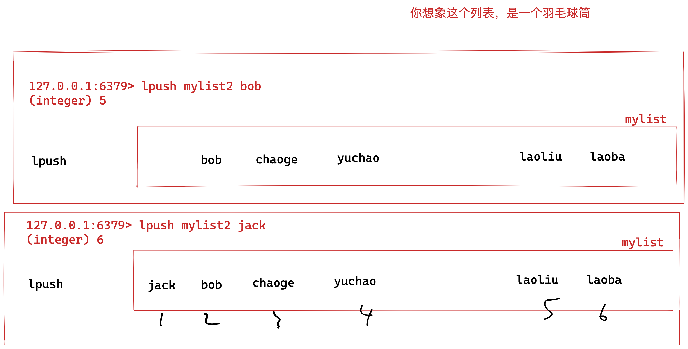
从左边压入数据
127.0.0.1:6379> lpush mylist2 bob
(integer) 5
127.0.0.1:6379> lpush mylist2 jack
(integer) 6
127.0.0.1:6379> lrange mylist2 0 -1
1) "jack"
2) "bob"
3) "chaoge"
4) "yuchao"
5) "laoliu"
6) "laoba"
继续测试rpush
127.0.0.1:6379> rpush mylist2 boy girl
(integer) 8
127.0.0.1:6379> lrange mylist2 0 -1
1) "jack"
2) "bob"
3) "chaoge"
4) "yuchao"
5) "laoliu"
6) "laoba"
7) "boy"
8) "girl"
127.0.0.1:6379>
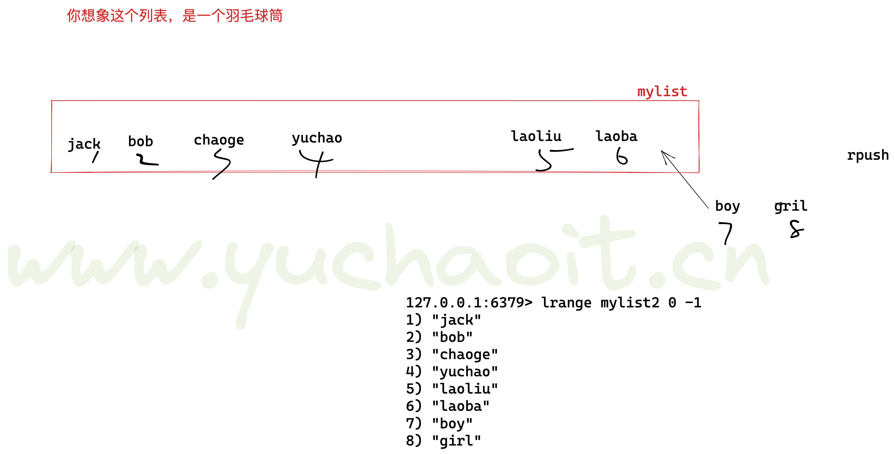
一次性写入list多个值lpush
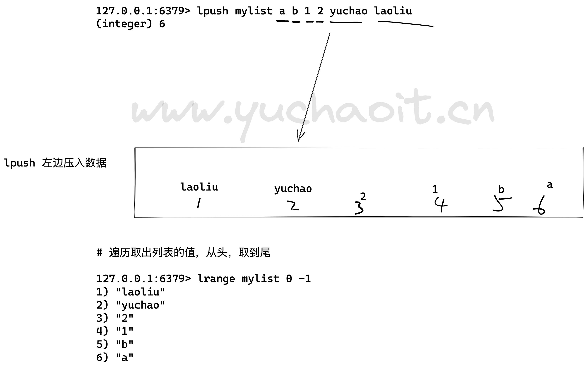
# 一次性创建列表，写入多个数据
127.0.0.1:6379> lpush mylist a b 1 2 yuchao laoliu
(integer) 6
# 遍历取出列表的值，从头，取到尾
127.0.0.1:6379> lrange mylist 0 -1
1) "laoliu"
2) "yuchao"
3) "2"
4) "1"
5) "b"
6) "a"
一次性rpush多个值
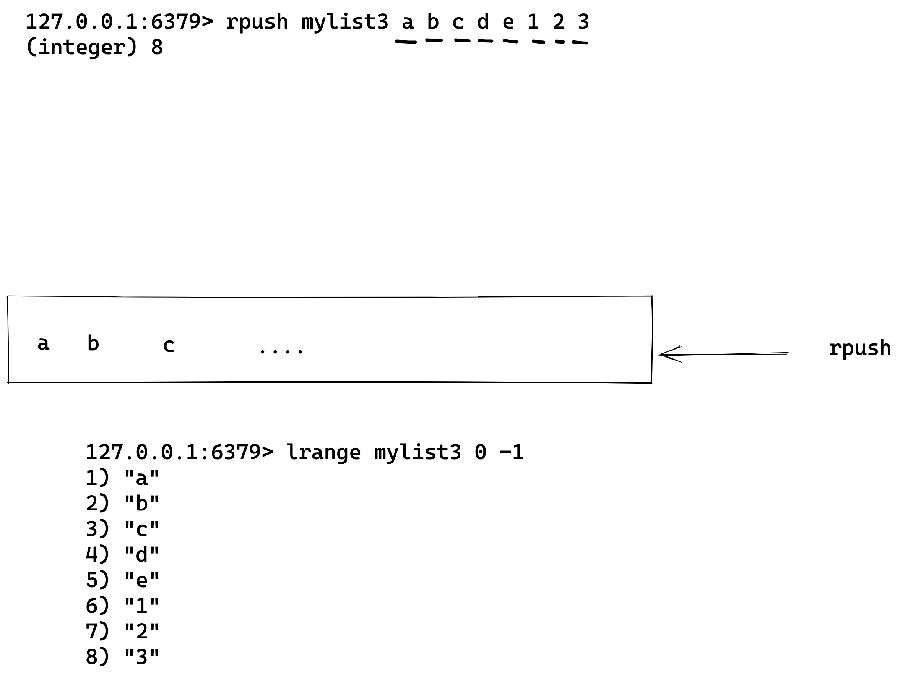
再次测试rpush和lpush
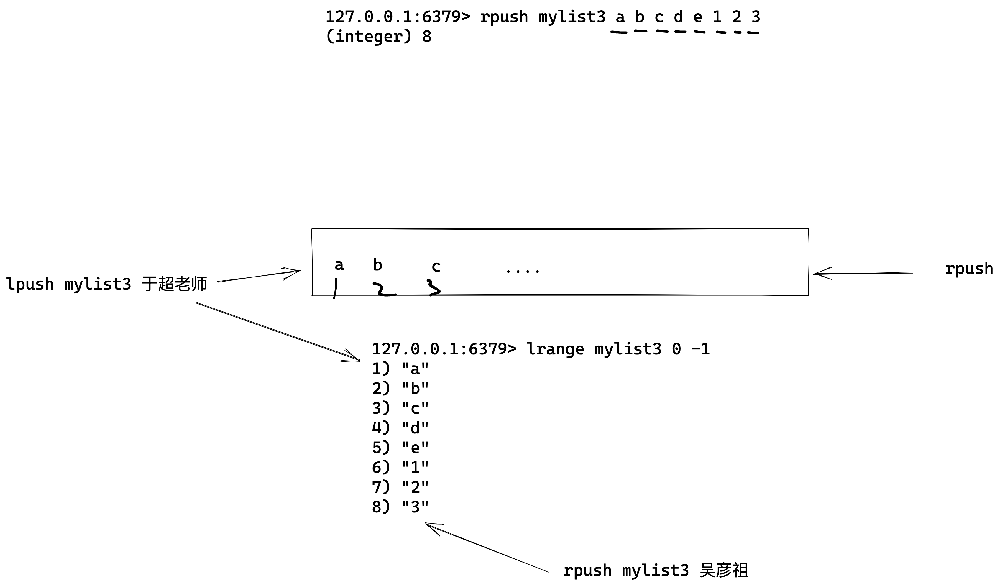
看看结果
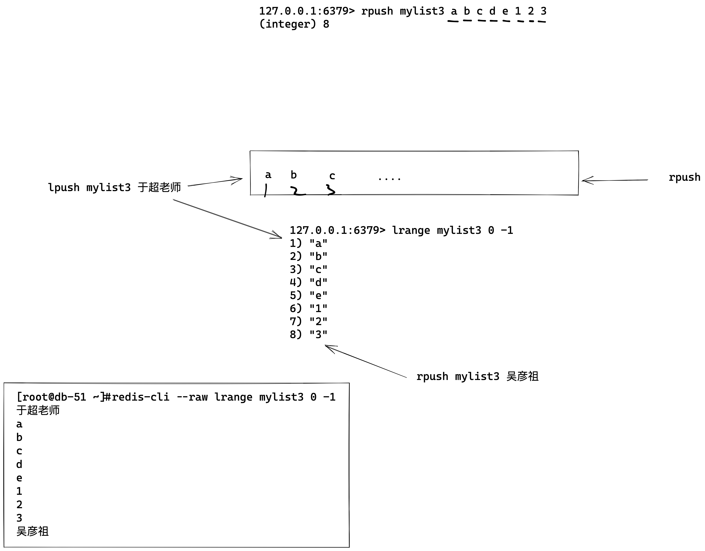
127.0.0.1:6379> rpush mylist3 吴彦祖
(integer) 9
127.0.0.1:6379>
127.0.0.1:6379> lpush mylist3 于超老师
(integer) 10
127.0.0.1:6379> exit
[root@db-51 ~]#
[root@db-51 ~]#redis-cli --raw lrange mylist3 0 -1
于超老师
a
b
c
d
e
1
2
3
吴彦祖
删除list元素
RPOP 从列表的右端弹出一个值，并返回被弹出的值 RPOP key
LPOP 从列表的左端弹出一个值，并返回被弹出的值 LPOP key
测试
[root@db-51 ~]#redis-cli
127.0.0.1:6379> rpop mylist3
"\xe5\x90\xb4\xe5\xbd\xa6\xe7\xa5\x96"
127.0.0.1:6379>
猜一猜呗删除的是谁
# 再来lpop
[root@db-51 ~]#
[root@db-51 ~]#redis-cli lpop mylist3
"\xe4\xba\x8e\xe8\xb6\x85\xe8\x80\x81\xe5\xb8\x88"
[root@db-51 ~]#redis-cli lpop mylist3
"a"
[root@db-51 ~]#redis-cli --raw lrange mylist3 0 -1
b
c
d
e
1
2
3
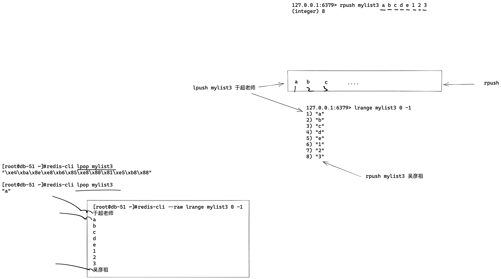
指定索引获取值
# 获取第一个元素
[root@db-51 ~]#redis-cli --raw lindex mylist3 0
b
# 获取最后一个元素
[root@db-51 ~]#redis-cli --raw lindex mylist3 -1
3
# 获取出字母 e
[root@db-51 ~]#redis-cli --raw lindex mylist3 3
e
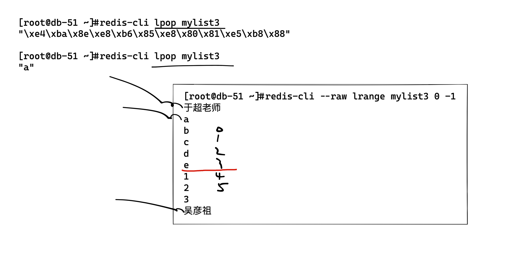
不得超出索引，否则报错
[root@db-51 ~]#redis-cli --raw lindex mylist3 e
ERR value is not an integer or out of range
删除列表整个key
[root@db-51 ~]#redis-cli del mylist3
(integer) 1
[root@db-51 ~]#redis-cli del mylist3
(integer) 0
[root@db-51 ~]#redis-cli get mylist3
(nil)
[root@db-51 ~]#
生产应用场景
- 微博，知乎等博文的timeline
- 用户发表的文章，用lpush加入时间轴，微博最新的文章列表。
- 订单系统、物流系统的消息队列
- 生产消费者，订单生成，订单处理
4.集合set
Redis 的 Set 是 String 类型的无序集合。
集合成员是唯一的，这就意味着集合中不能出现重复的数据。
Redis 中集合是通过哈希表实现的，所以添加，删除，查找的复杂度都是 O(1)。
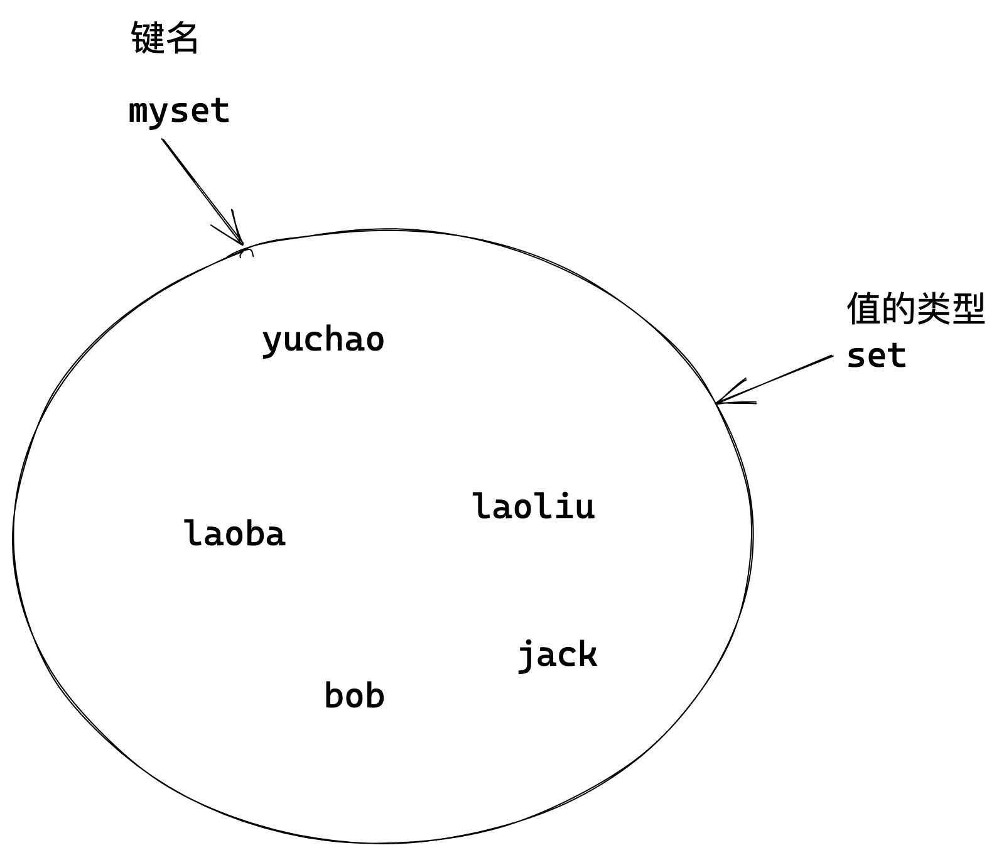
- 命令使用
| 命令 | 简述 | 使用 |
|---|---|---|
| SADD | 向集合添加一个或多个成员 | SADD key value |
| SCARD | 获取集合的成员数 | SCARD key |
| SMEMBERS | 返回集合中的所有成员 | SMEMBERS key member |
| SISMEMBER | 判断 member 元素是否是集合 key 的成员 | SISMEMBER key member |
set创建
# 创建集合
[root@db-51 ~]#redis-cli SADD myset1 yuchao sanpang laoliu laoba
(integer) 4
# 查看集合成员
[root@db-51 ~]#redis-cli SMEMBERS myset1
1) "yuchao"
2) "laoliu"
3) "sanpang"
4) "laoba"
# set无法重复创建，且自动去重
[root@db-51 ~]#redis-cli SADD myset2 yuchao sanpang laoliu laoba laoliu yuchao
(integer) 4
[root@db-51 ~]#redis-cli SMEMBERS myset2
1) "laoliu"
2) "sanpang"
3) "laoba"
4) "yuchao"
# 查看元素是否是集合的 ，0 是不存在，1是存在
[root@db-51 ~]#redis-cli sismember myset2 laoqi
(integer) 0
[root@db-51 ~]#redis-cli sismember myset2 laoliu
(integer) 1
# 获取集合元素个数
[root@db-51 ~]#redis-cli scard myset2
(integer) 4
[root@db-51 ~]#redis-cli scard myset1
(integer) 4
可以看到，集合的元素写入，以及存储，是无序的。
set和list区别
- list可以存储重复元素，set天然去重，应该存储不得重复的数据
- list按元素写入方式，进行先后存储、set无序存储
交集sinter
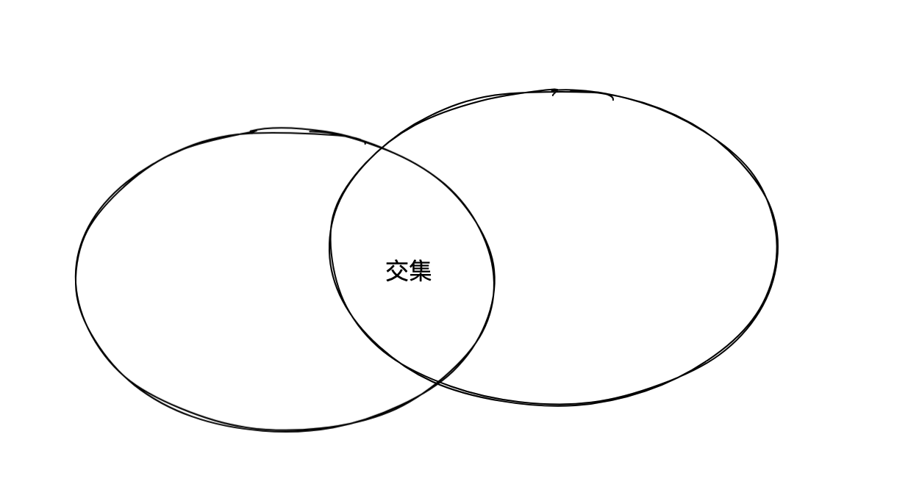
# 集合1
[root@db-51 ~]#redis-cli smembers myset1
1) "laoliu"
2) "laoba"
3) "yuchao"
4) "sanpang"
# 集合2
[root@db-51 ~]#redis-cli SMEMBERS myset2
1) "laoliu"
2) "laoba"
3) "yuchao"
4) "sanpang"
# 集合2再加入几个元素
# 确认加入了3个元素
[root@db-51 ~]#redis-cli sadd myset2 laosan laosi laowu
(integer) 3
[root@db-51 ~]#redis-cli SMEMBERS myset2
1) "laowu"
2) "laoliu"
3) "laoba"
4) "yuchao"
5) "laosan"
6) "sanpang"
7) "laosi"
# 交集
[root@db-51 ~]#redis-cli sinter myset1 myset2
1) "laoliu"
2) "laoba"
3) "yuchao"
4) "sanpang"
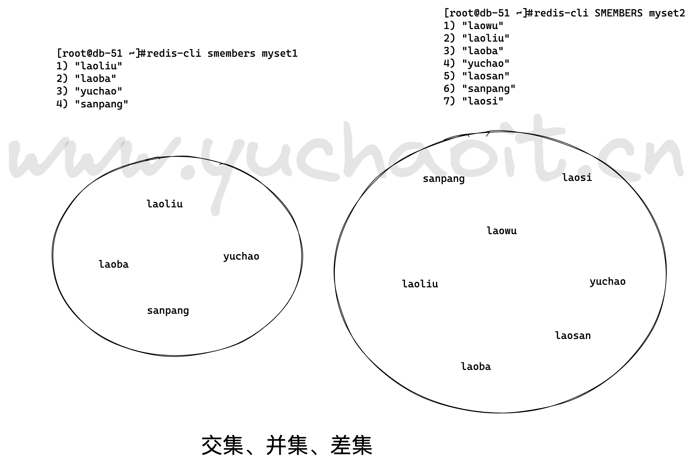
差集sdiff
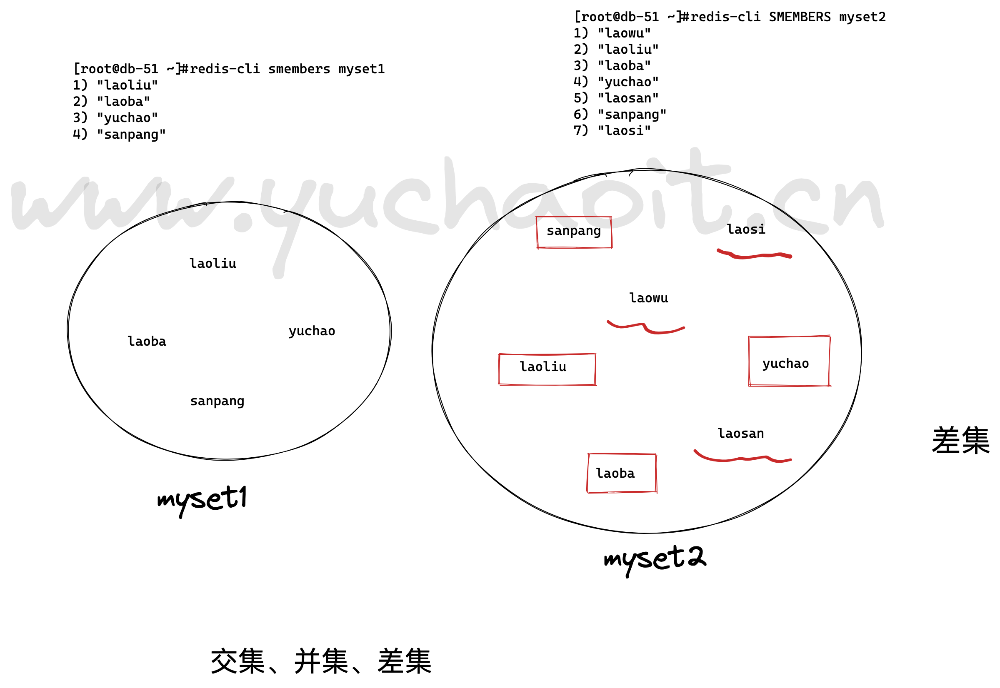
myset1有，而myset2没有的
[root@db-51 ~]#redis-cli sdiff myset1 myset2
(empty list or set)
Myset2有，而myset1没有的
[root@db-51 ~]#redis-cli sdiff myset2 myset1
1) "laowu"
2) "laosan"
3) "laosi"
并集sunion
大家公有的，去重的所有数据
[root@db-51 ~]#redis-cli sunion myset2 myset1
1) "laowu"
2) "laoliu"
3) "laoba"
4) "yuchao"
5) "laosan"
6) "sanpang"
7) "laosi"
[root@db-51 ~]#redis-cli sunion myset1 myset2
1) "laowu"
2) "laoliu"
3) "laoba"
4) "yuchao"
5) "laosan"
6) "sanpang"
7) "laosi"
企业应用场景
微信，微博，等社交APP的标签功能
- 你，我，他都关注了美女板块的视频动态
- 系统根据标签选择给这一类的用户，较高比重的推送美女视频。
用户收藏夹
- 利用set去重功能，实现不会重复收藏，重复性点赞，踩，一类的功能
5.HASH散列
Redis hash 是一个 string 类型的 field（字段） 和 value（值） 的映射表，hash 特别适合用于存储对象。
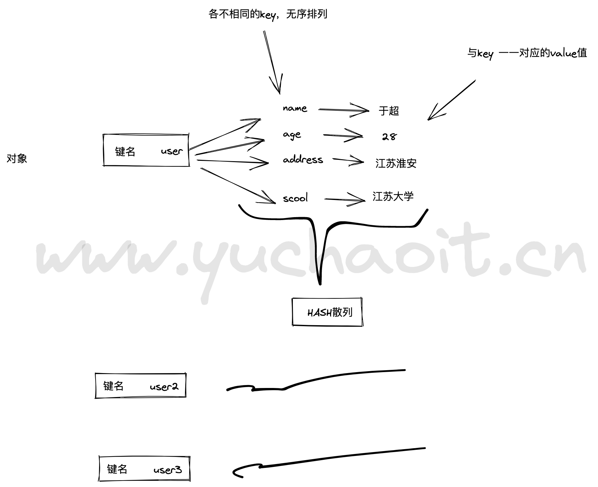
- 命令使用
| 命令 | 简述 | 使用 |
|---|---|---|
| HSET | 添加键值对 | HSET hash-key sub-key1 value1 |
| HGET | 获取指定散列键的值 | HGET hash-key key1 |
| HGETALL | 获取散列中包含的所有键值对 | HGETALL hash-key |
| HDEL | 如果给定键存在于散列中，那么就移除这个键 | HDEL hash-key sub-key1 |
| HMSET | 一次性添加多个键值对 | |
| HMGET | 一次性查询多个key-value |
命令执行
# 语法，添加单个的键值对
127.0.0.1:6379> hset key field value
# 创建用户key-value
# 设置user1信息的key，值是hash散列类型
127.0.0.1:6379> hset user1 name yuchao
(integer) 1
# 给user1 增加一对k-v
127.0.0.1:6379> hset user1 age 18
(integer) 1
# 获取user1的所有k-v数据
127.0.0.1:6379> hgetall user1
1) "name"
2) "yuchao"
3) "age"
4) "18"
# 单独查询某一个元素的value
127.0.0.1:6379> hget user1 name
"yuchao"
127.0.0.1:6379> hget user1 age
"18"
# 再加一个邮箱信息 k-v
127.0.0.1:6379> hset user1 email yc_uuu@163.com
(integer) 1
# 再次查询
127.0.0.1:6379> HGETALL user1
1) "name"
2) "yuchao"
3) "age"
4) "18"
5) "email"
6) "yc_uuu@163.com"
redis缓存mysql数据
mysql表
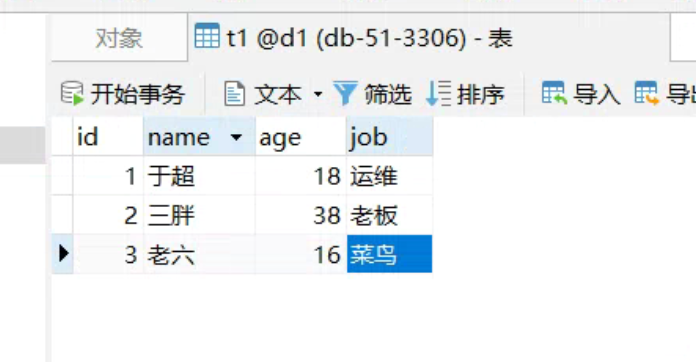
存储为redis的hash类型
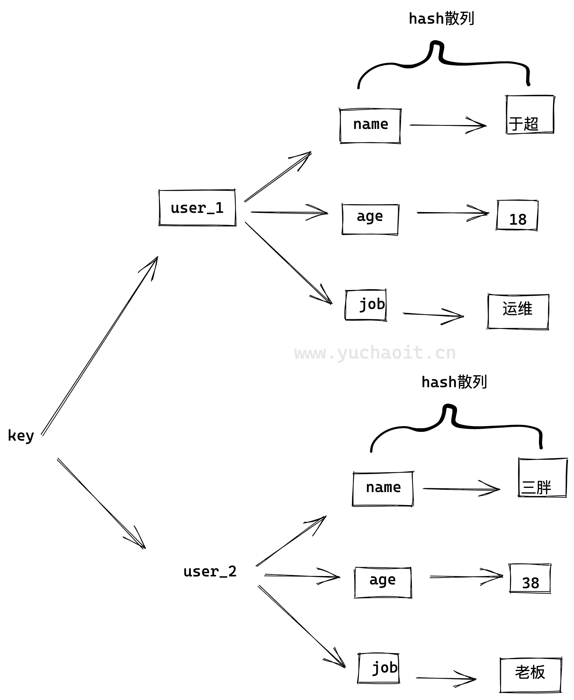
1.设置redis数据
# 设置三条数据
[root@db-51 /opt/redis]#redis-cli
127.0.0.1:6379> hmset user_1 name 于超 age 18 job 运维
OK
127.0.0.1:6379> hmset user_2 name 三胖 age 38 job 老板
OK
127.0.0.1:6379>
127.0.0.1:6379> hmset user_3 name 老六 age 16 job 菜鸟
OK
127.0.0.1:6379>
2.查询某个用户的信息
# 查询 一号用户的 名字，职位
mysql> select name,job from d1.t1 where id=1;
+--------+--------+
| name | job |
+--------+--------+
| 于超 | 运维 |
+--------+--------+
1 row in set (0.00 sec)
# redis查询方式
[root@db-51 /opt/redis]#redis-cli --raw HMGET user_1 name job
于超
运维
3.查询某个用户所有信息
[root@db-51 /opt/redis]#mysql -e "select * from d1.t1 where id=3"
+----+--------+------+--------+
| id | name | age | job |
+----+--------+------+--------+
| 3 | 老六 | 16 | 菜鸟 |
+----+--------+------+--------+
# redis查询
[root@db-51 /opt/redis]#redis-cli --raw hgetall user_3
name
老六
age
16
job
菜鸟
生产用法
比起string类型存储数据，更直观，更高效，更省空间。
如存储用户信息
存储一篇帖子的阅读数、评论数各类信息。
6.Zset有序集合
Redis 有序集合和集合一样也是 string 类型元素的集合,且不允许重复的成员。
不同的是每个元素都会关联一个 double 类型的分数。
redis 正是通过分数来为集合中的成员进行从小到大的排序。
常用在排行榜
工资排行
成绩排行
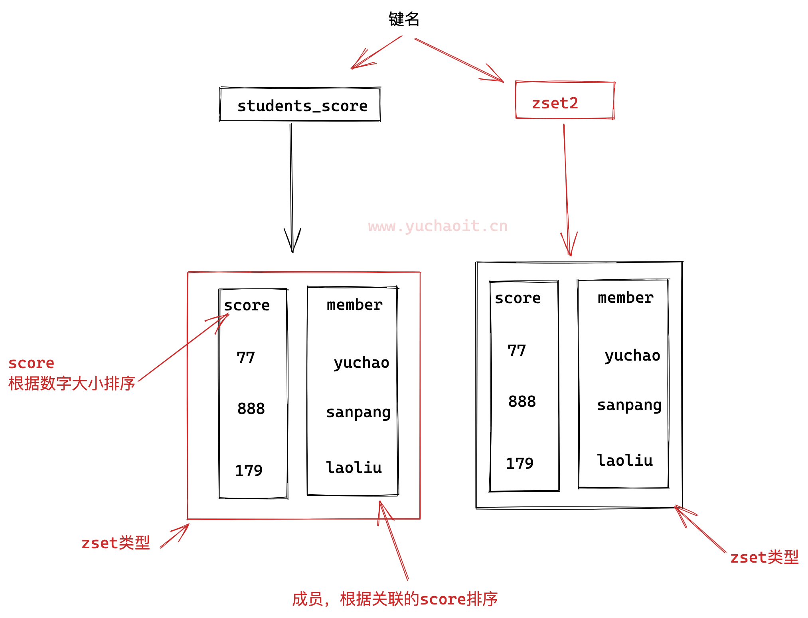
看zset语法
127.0.0.1:6379> zadd s2 [NX|XX] [CH] [INCR] score member [score member ...]
- 命令使用
| 命令 | 简述 | 使用 |
|---|---|---|
| ZADD | 将一个带有给定分值的成员添加到有序集合里面 | ZADD zset-key 178 member1 |
| ZRANGE | 根据元素在有序集合中所处的位置，从有序集合中获取多个元素 | ZRANGE zset-key 0-1 withccores |
| ZREM | 如果给定元素成员存在于有序集合中，那么就移除这个元素 | ZREM zset-key member1 |
命令实践
# 创建有序徐集合key
[root@db-51 /opt/redis]#redis-cli
127.0.0.1:6379> zadd students_score 100 yuchao 80 bob
(integer) 2
127.0.0.1:6379>
127.0.0.1:6379> zadd students_score 77 jack
(integer) 1
127.0.0.1:6379>
127.0.0.1:6379> zadd students_score 48 tom
(integer) 1
127.0.0.1:6379>
# 查看zset成员个数
127.0.0.1:6379> ZCARD students_score
(integer) 4
# 查看某个成员分数
127.0.0.1:6379> ZSCORE students_score yuchao
"100"
127.0.0.1:6379> ZSCORE students_score bob
"80"
# 按照，升序，查看成员排名，且携带分数查看
127.0.0.1:6379> Zrange students_score 0 -1 withscores
1) "tom"
2) "48"
3) "jack"
4) "77"
5) "bob"
6) "80"
7) "yuchao"
8) "100"
# 显示某个用户的排名，倒数第二
127.0.0.1:6379> ZRANK students_score jack
(integer) 1
# 倒数第一
127.0.0.1:6379> ZRANK students_score tom
(integer) 0
# 按照降序查看成员分数名次
[root@db-51 /opt/redis]#redis-cli
127.0.0.1:6379> ZREVRANGE students_score 0 -1 withscores
1) "yuchao"
2) "100"
3) "bob"
4) "80"
5) "jack"
6) "77"
7) "tom"
8) "48"
127.0.0.1:6379>
# 删除成员
127.0.0.1:6379> ZREM students_score bob jack
(integer) 2
127.0.0.1:6379>
127.0.0.1:6379> Zrange students_score 0 -1 withscores
1) "tom"
2) "48"
3) "yuchao"
4) "100"
127.0.0.1:6379>
# 返回指定排名范围的成员
127.0.0.1:6379> ZADD students_score 148 bob 177 jack 188 laoliu 46 laoba
(integer) 4
# 返回所有人的成绩
127.0.0.1:6379> zrange students_score 0 -1 withscores
1) "laoba"
2) "46"
3) "tom"
4) "48"
5) "yuchao"
6) "100"
7) "bob"
8) "148"
9) "jack"
10) "177"
11) "laoliu"
12) "188"
# 返回指定排名范围的成员
127.0.0.1:6379> ZRANGE students_score 1 4 withscores
1) "tom"
2) "48"
3) "yuchao"
4) "100"
5) "bob"
6) "148"
7) "jack"
8) "177"
# 返回指定分数范围的成员
# 查出在及格线60以上的分数，成员
127.0.0.1:6379> ZRANGEBYSCORE students_score 60 150 withscores
1) "yuchao"
2) "100"
3) "bob"
4) "148"
# 给某个成员添加排行权重，分数
127.0.0.1:6379> ZINCRBY students_score 500 yuchao
"600"
# 果然充钱就可以当大哥啊，花钱买分数不行吗
127.0.0.1:6379> zrange students_score 0 -1 withscores
1) "laoba"
2) "46"
3) "tom"
4) "48"
5) "bob"
6) "148"
7) "jack"
8) "177"
9) "laoliu"
10) "188"
11) "yuchao"
12) "600"
127.0.0.1:6379>
生产用法
排行榜：有序集合经典使用场景。
例如小说视频等网站需要对用户上传的小说视频做排行榜，榜单可以按照用户关注数，更新时间，字数等打分，做排行。
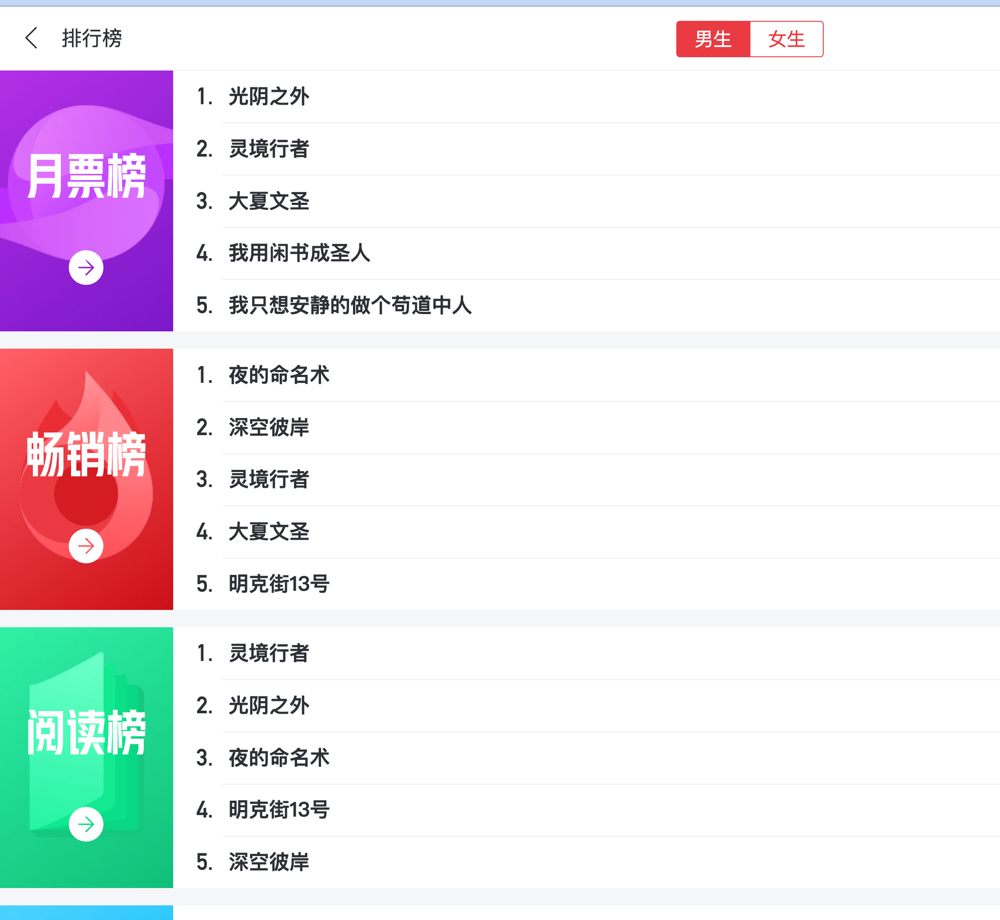
月票数作为score，成员就是小说名。